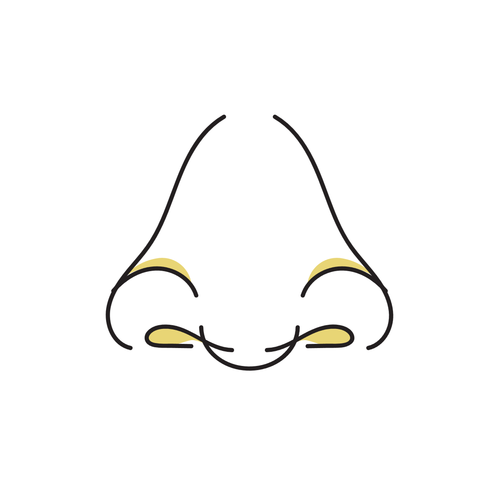
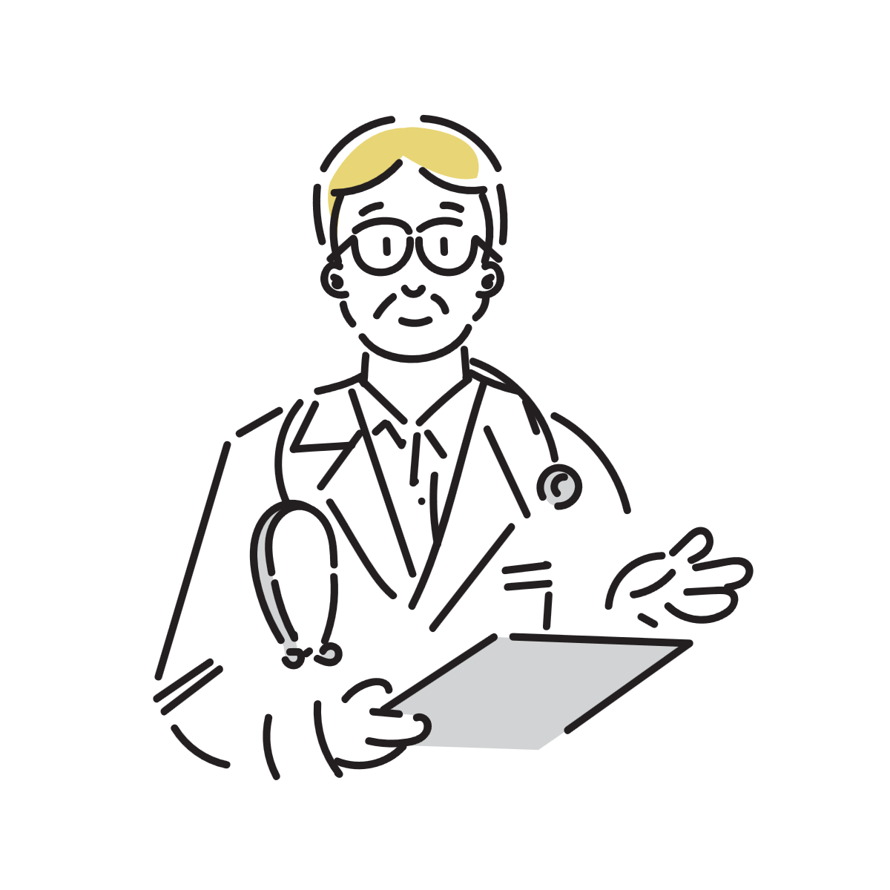
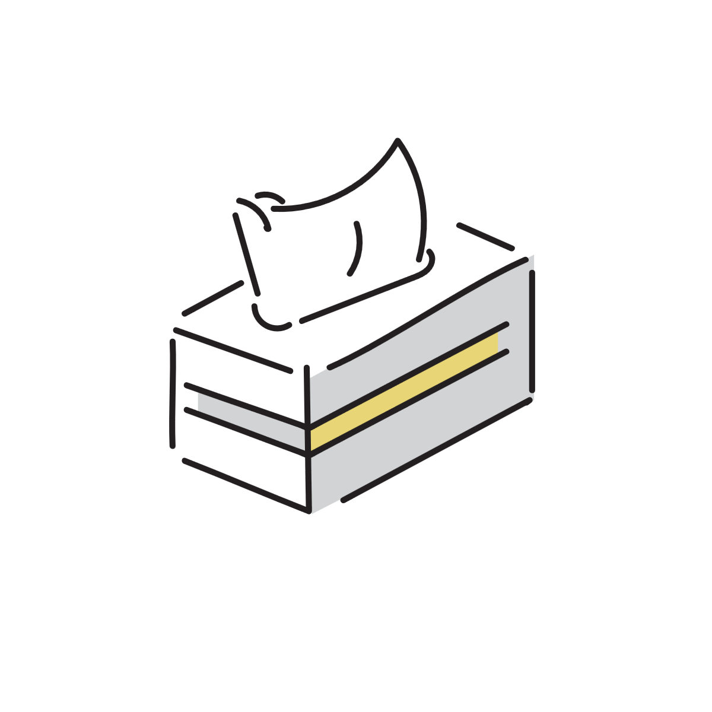

鼻がピーピー鳴るのはなぜ？
鼻で呼吸をすると、「ピーピー」「ヒューヒュー」と小さな音が鳴ることはありませんか？
「静かな場所で他人に聞こえていないか心配」「自分だけおかしいのでは」と、地味に気になって不安になることも多いものです。
こうした音は、病気というよりも、鼻の中を通る空気の通り道や乾燥が原因で起こるケースがほとんどです。

なぜ鼻がピーピー鳴るのか？音が生まれる物理的なメカニズム
静かな呼吸をしているとき、多くの人は無音であるにもかかわらず、なぜか一部の人だけ「ピーピー」「ヒューヒュー」と笛のような音が鳴ることがあります。この現象の正体は、鼻の中という極めて狭い空間を空気が通り抜けるときに起きる「流体力学的な振動」です。
鼻腔の内部は平らなパイプではなく、ひだ状の複雑な構造や、柔らかい粘膜の壁が入り組んでいます。呼吸によって空気がこの狭い隙間を通過する際、もし通り道にわずかな「くびれ」や「偏り」があると、空気がスムーズに流れることができずに渦を巻いたり、壁面を細かく振動させたりします。
これが楽器の管や口笛が鳴る仕組みと全く同じ原理です。つまり鼻の音が鳴る人は、呼吸の勢いや空気の通り道のバランスによって、体内で小さな「笛」が作られやすい状態になっていると言えます。
メカニズムを左右する「粘膜の状態」と「乾燥」の要因
では、なぜ「常に鳴る人」と「まったく鳴らない人」がいるのか、あるいは「普段は鳴らないのに、ふとしたときに鳴る人」がいるのかというと、そこには鼻粘膜の潤いとコンディションが深く関わっています。
鼻の粘膜は非常にデリケートで、わずかな湿度の低下や体調の変化によって、水分量が変わりやすい性質を持っています。空気が乾燥して粘膜の表面がわずかに引き締まったり、微小な荒れが生じたりすると、空気の通り道がいつもより少しだけエッジの立った状態（滑らかさが失われた状態）になります。
この「わずかなコンディションの変化」が、空気の通り道に絶妙な段差や抵抗を生み出し、普段なら通り過ぎるだけの空気を振動させて音に変えてしまうのです。
つまり鼻ピーピーは、特別な異常というよりも、「その人の鼻の構造」と「その日の乾燥や粘膜の状態」という条件がピタリと重なった瞬間にだけ発生する、ごく物理的な現象の現れだと言えます。
「自分だけ音がする」と感じやすい理由
呼吸音は、自分の頭の中で響く形で聞こえるため、本人には実際より大きく感じやすくなります。
また、一度気になり始めると、静かな場所で呼吸音へ意識が向きやすくなります。
その結果、「ずっと鳴っている気がする」「他人には聞こえているのでは」と不安になることがあります。
ただし、軽い呼吸音は意外と多くの人に起きており、本人だけが強く認識しているケースも少なくありません。
鼻が鳴るだけで耳鼻科に行ってもいい？受診の目安
「痛みがあるわけではないし、こんなことで受診していいのだろうか」と迷う人もいます。
実際には、鼻の違和感や呼吸音を理由に耳鼻科へ相談すること自体は珍しいことではありません。
特に、「昔より明らかに音が強くなった」「鼻づまり感が続く」「片側だけ極端に鳴る」「呼吸しづらい」といった場合は、鼻の中の状態を確認する意味があります。
一方で、軽い音だけで日常生活に支障がなく、体調や乾燥で変動する程度なら、鼻の構造や空気の流れによる個性の範囲に近いケースもあります。
つまり、「危険だから必ず受診」ではありませんが、「気になり続けているなら相談してもよい」という位置づけに近いと考えると自然です。
実際には「安心確認」で終わることも多い
耳鼻科では、鼻の粘膜状態や曲がり具合、炎症の有無などを確認できます。
特に大きな異常が見つからず、「構造上ある程度音が出やすい」と説明されるケースもあります。
ただ、「異常ではない」と確認できるだけでも安心感につながることがあります。

今すぐ試せる、鼻の「ピーピー音」を和らげる小さな対処法
静かな場所などで急に音が気になりだしたとき、その場でできるちょっとした工夫で音が収まることもあります。
1. 頭・顔の角度や舌の位置を少し変えてみる
空気の通り道のわずかな偏りが原因のことが多いため、あごを少し引いたり、顔の向きを左右に変えたりして、空気の当たる角度をずらしてみます。
また、一度口を軽く開け、舌の力を抜いて上顎からフッと離すことで、鼻の奥の緊張がゆるみ、呼吸音が落ち着くケースもあります。
2. 優しく鼻をかんでみる
ごく小さな鼻水や、乾燥した粘膜の端が引っかかっている場合、一度ティッシュで優しく鼻をかむことで流れが整い、音が止まることがあります（強くすするのは逆効果になるため注意が必要です）。
3. 温かい飲み物の湯気を吸い込む
マグカップに入った温かいお茶や白湯などの湯気を、鼻からゆっくり数回吸い込みます。一時的に乾燥した粘膜が潤い、スムーズな呼吸に戻りやすくなります。
4.ホットタオルなどで鼻を温める
ホットタオルで鼻を温めると、乾燥でこわばった粘膜が柔らかくなり、空気の通り道がスムーズになって音が和らぐことがあります。
一方で、冷やすと一時的に血管は縮みますが、その反動でかえって粘膜が過敏になったりバランスが崩れたりすることがあるため、音対策としては「温めて潤す」アプローチのほうが安心です。
こうした方法はあくまで一時的なものですが、「今すぐどうにかしたい」というときの選択肢として覚えておくと安心につながります。

他人の鼻の音が気になってしまうときの受け止め方
自分が鳴る側ではなく、オフィスや学校の自習室などで、近くの人の「ピーピー」という呼吸音が気になって仕方がない……というケースも少なくありません。
静かな空間であればあるほど、一度気になり始めると意識がそこに張り付いてしまい、イライラしたりして疲れてしまいますよね。
ですが、こうした状況で気持ちをラクにするためには、いくつかの「納得感」を持つことが近道になります。
1. 相手も「好きで鳴らしているわけではない」と知る
鼻の構造やその日の乾燥状態、ちょっとした粘膜の偏りは自分ではコントロールしにくいものです。相手もわざと音を出しているわけではなく、本人すら気づいていないことがほとんど。「あ、今この人の鼻の中でも、空気の通り道でちょっとした現象が起きているんだな」と、生理現象として物理的に捉えると、不思議とトゲが抜けていきます。
2. 「静かな空間ほど、脳は音を拾いたがる」という仕組みを知る
人間の脳には、周囲が静かになると、わずかな音をキャッチして警戒・注目しようとする本能的な機能があります。つまり、音が気になるのは人間の脳が持つ正常な仕組みが、過剰に働いているだけという見方もできます。「あ、今自分の脳がアンテナを立てすぎているんだな」と自分の状態を客観視することで苛立ちが少し減ることがあります。
3. 「仕方のないこと」として、意識のチャンネルをそっと切り替える
他人の体の動きや呼吸をその場で止めることはできません。「どうにかして音を消してほしい」と願うほどストレスが溜まってしまうため、「こういう環境やタイミングもあるよね」と一度心の中で受け入れ、自分の目の前の作業や文字にそっと意識のチャンネルを戻してあげる。
他人の音が気になったときは、「直そう」とするのではなく、「人間の体って不思議だな、お互い様だな」と心の中で小さく肩をすくめてやり過ごすくらいが、一番穏やかに過ごせる方法かもしれません。
参考情報と注意点
鼻の呼吸音には個人差があります。強い詰まり感や痛みを伴う場合は医療機関への相談も検討してください。
関連アイテム
 | 価格:3680円 |